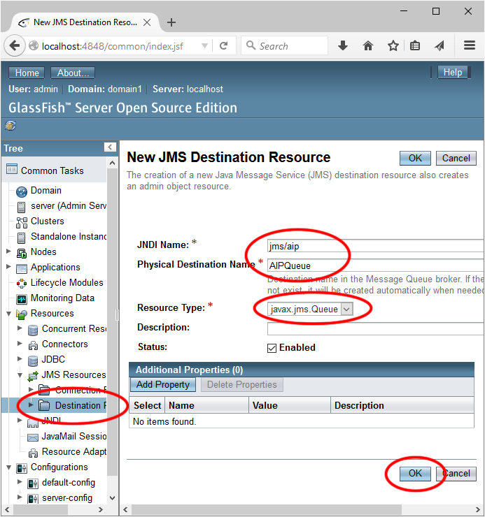

Two possible possible solutions to the challenge problem appear below. They are zipped NetBeans project folders.
Please note that the challenge problem was very open-ended. My solution is just one of many possible design choices.
If you found a clever solution to some part of the challenge or if you have any questions, you are welcome to discuss it on the "Discussion Board" or in the next Lab session.
Asynchronous
 Bonus-async-challenge.zip
Bonus-async-challenge.zipThis project requires you to have configured a JDBC resource named jdbc/aip.
Message Driven Bean
This project requires that you have configured a JMS Destination Resource named jms/aip of type javax.jms.Queue.
You can do this from the administration console. In JMS Resources, go to Destination Resources and add a New resource. Refer to the image below for configuration.
